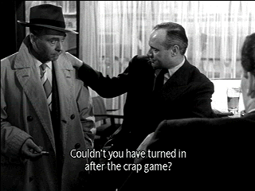

| Bob Le Flambeur (SE)/ A-, B |
| Criterion/1956/102/FS 1.33/BW |
The center piece of Bob Le Flambeur, the heist of
the Deauville Casino, is almost a throwaway. Instead, Director
Jean-Pierre Melville's classic black and white precursor to "la
Nouvelle Vague" French cinema focuses more on the lives of these
tough Paris hoods, examining a fascinating sub-culture and creating a
stunning ambiance. It's got enough atmosphere to stuff several
successful films.
 |
|
A word of advice. ©Criterion
|
Melville directs with a confidence. His direct
approach makes this film a particular pleasure. Hip, tough-guy dialogue
lays naturally with the characters. He captures early 1950's Paris with
rare intimacy. There's an abundance of street charm to Bob Le Flambeur.
If you needed one word to describe Bob Le Flambeur, it would be
savvy. Melville seems to know his characters well. It's easy for him to
paint sympathetic portraits.
Bob's domain is the slightly disreputable streets
of Montmartre. Bob's a tough guy with a latent chivalrous streak in
him. When his ire is pricked he can lash out. The silver-haired stocky Bob
has a limited tolerance for what he deems as bull shit. The film
hinges on Bob's element of cool. You've got to be on Bob's side and
Melville makes certain to weigh in heavily in the ambler's favor.
Despite his shady life, he wins you over. Even Bob's callow young
associate Paulo delivers his own dose of youthful charm.
The script by Auguste le Breton is consistently
on target. Breton also wrote Rififi in
the same year and stylistic elements are clearly related. The screenplay
wisely includes character history. There's a sense of their past, secret
aspects of their relationships, without an undue dose of exposition. Fine,
jazzy, musical score give Bob Le Flambeur a stylistic boost. It
captures, the beat of the city and the energy of the players.
Roger Duchesne is perfection as Bob. He doesn't
look like an actor. When he grabs someone by the collar, you can imagine
the next move. And his gambling habit is just as natural to him as his
deliberate walk. and the assortment of Melville characters creates a
marvelous ambiance for the world of Bob
Le Flambeur. Daniel Cauchy gives an effectively antsy performance as
Paulo. André Garet is very effective in the no-nonsense of role of Bob's
associate Roger. Isabelle Corey, making her screen debut for Melville, is
slightly stiff but willing.
The low-light shot of Paris at dawn is very
grainy. There's consistent fine grain evident throughout the film, but it
is controlled and film-like. Contrast range is slightly washed out. The
image is quite sharp. The scene-to-scene consistency of the transfer is
excellent. Gray scale range favors the mid-section. White English
subtitles are easy to read on the image.
It's a sparse special edition featuring a
recent 22-minute video interview recently with (Paulo), who casts an
added light of the film production. Cauchy is still charming. He conveys
the element of passion for movies that drove Melville. There is also a
radio interview with Melville recorded in the 1960s. Criterion includes a
nice booklet which contains an 1970 interview with Melville. |
|
|
|


The National Film Preservation Foundation (NFPF) is the
nonprofit organization created by the U.S. Congress to save America's film
heritage.
 ETEKNet
is the web's only 24-hour, totally FREE source for all your home theater,
DVD, Dreamcast, PC, and Networking tech support needs! ETEKNet
is the web's only 24-hour, totally FREE source for all your home theater,
DVD, Dreamcast, PC, and Networking tech support needs!
DVDRAMA
One of France's outstanding DVD resources. Par le vous DVD?

Excellent British based DVD review site that features Region 2 and
Region 1 releases. Check out their fine interviews as well.

Selections from the Feature
Archive include articles on Akira Kurosawa, Frank Darabont, Blonde Bimbos, Hollywood Street Gangs, or Vietnam: The Hollywood Pariah, and many
more....

Screen legend Gary Cooper won two Academy Awards© as Best
Actor during a career that included 114 Hollywood films. Click on his
image for a bio and poster images.

Vanishing, The/A,B
Like a perfect short tale from Poe. Not typical fare digested by
American audiences. The Vanishing, a film that ranks with classics of the
genre, must be considered a collectible. In Dutch with English subtitles.

In the history of the Academy Awards only once have three actors from the same
film been nominated for Best Actor. Clark Gable, Charles Laughton and Francot
Tone were all nominated for Mutiny on the Bounty in 1935. Victor McLaglen took
advantage of the unusual circumstances to garner the most votes and took home
the Oscar® |